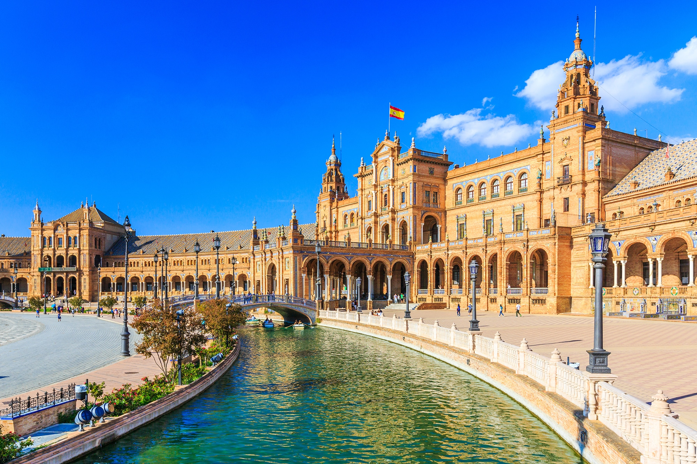
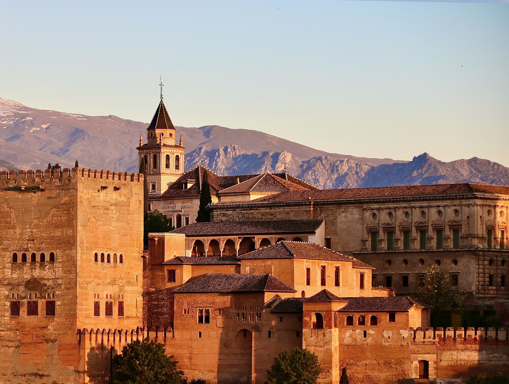

Spain, a country on Europe’s Iberian Peninsula, includes 17 autonomous regions with diverse geography and cultures. Capital city Madrid is home to the Royal Palace and Prado museum, housing works by European masters. Segovia has a medieval castle (the Alcázar) and an intact Roman aqueduct. Catalonia’s capital, Barcelona, is defined by Antoni Gaudí’s whimsical modernist landmarks like the Sagrada Família church.
Spain is famous around the world for Flamenco music and dance, bullfights, fantastic beaches, and lots of sunshine. But what people sometimes forget is that Spain has been one of the cultural centers of Europe for thousands of years.
Spain has an extraordinary artistic heritage. The dominant figures of the Golden Age were the Toledo-based artists El Greco and Diego Velázquez. Francisco de Goya emerged in the 18th century as Spain's most prolific painter and he produced some wonderfully unflattering portraits of royalty. The art world in the early 20th century was influenced by a remarkable group of Spanish artists: Pablo Picasso, Juan Gris, Joan Miró and Salvador Dalí, ambassadors of the artistic culture in Spain.
The economy of Spain is a highly developed social market economy. It’s the world's 15th largest by nominal GDP and the sixth-largest in Europe. Spain is a member of the European Union and the eurozone, as well as the Organization for Economic Co-operation and Development and the World Trade Organization. In 2021, Spain was the twentieth-largest exporter in the world and the sixteenth-largest importer.
Spain has lot's of aspects and places to attract visitors. Some places are -
Barcelona is a city on the northeastern coast of Spain. It is the capital and largest city of the autonomous community of Catalonia, as well as the second-most populous municipality of Spain. With a population of 1.6 million within city limits, its urban area extends to numerous neighbouring municipalities within the province of Barcelona and is home to around 4.8 million people, making it the fifth most populous urban area in the European Union after Paris, the Ruhr area, Madrid and Milan. It is one of the largest metropolises on the Mediterranean Sea, located on the coast between the mouths of the rivers Llobregat and Besòs, bounded to the west by the Serra de Collserola mountain range.
Madrid, city, capital of Spain and of Madrid provincia (province). Spain’s arts and financial centre, the city proper and province form a comunidad autónoma (autonomous community) in central Spain.
Madrid was officially made the national capital by Philip III, an entire generation after Philip II took the court to Madrid in 1561. Under the patronage of Philip II and his successors, Madrid developed into a city of curious contrasts, preserving its old, overcrowded centre, around which developed palaces, convents, churches, and public buildings.
Sevilla, conventional Seville, ancient Hispalis, city, capital of the provincia (province) of Sevilla, in the Andalusia comunidad autónoma (autonomous community) of southern Spain. Sevilla lies on the left (east) bank of the Guadalquivir River at a point about 54 miles (87 km) north of the Atlantic Ocean and about 340 miles (550 km) southwest of Madrid. An inland port, it is the chief city of Andalusia and the fourth largest in Spain. Sevilla was important in history as a cultural centre, as a capital of Muslim Spain, and as a centre for Spanish exploration of the New World.
Granada is a city in southern Spain’s Andalusia region, in the foothills of the Sierra Nevada mountains. It's known for grand examples of medieval architecture dating to the Moorish occupation, especially the Alhambra. This sprawling hilltop fortress complex encompasses royal palaces, serene patios, and reflecting pools from the Nasrid dynasty, as well as the fountains and orchards of the Generalife gardens.
Ibiza is one of the Balearic islands, an archipelago of Spain in the Mediterranean Sea. It's well known for the lively nightlife in Ibiza Town and Sant Antoni, where major European nightclubs have summer outposts. It’s also home to quiet villages, yoga retreats and beaches, from Platja d'en Bossa, lined with hotels, bars and shops, to quieter sandy coves backed by pine-clad hills found all around the coast.